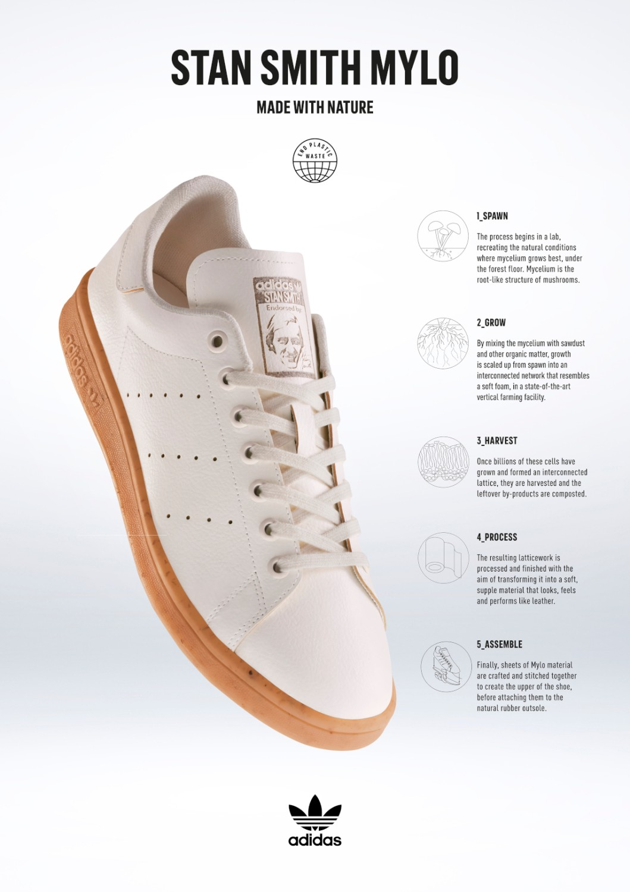

Meno di un mese fa passeggiavo sulla costa della Normandia - precisamente ero ad Ètretat cercando di respirare un po' di ispirazione Impressionista - e non ho potuto fare a meno di notare le numerose alghe che il mare portava a riva.
Quelle stesse alghe di cui i proprietari degli stabilimenti balneari cercando di sbarazzarsi, in quanto poco apprezzate dai bagnanti e "poco belle da vedere."
Cosa sono le alghe?
Le alghe sono degli organismi, ricchi di sorprese e proprietà, che crescono sul fondale marino.
Noi siamo abituati a conoscere soprattutto "l'alga Wakame" - un po' per i recenti anni di influenza della cucina asiatica e un po' per i suoi nutrienti - che io ad esempio assumo principalmente in polvere; un ottimo energizzante naturale! (Approfondimenti)
Le alghe, per qualche ragione, mi hanno sempre appassionata e sono state anche soggetto di una delle mie prime pubblicazioni.
L'origine di questo forte interesse sono i Biomateriali. Ho speso un anno intero a scrivere e ricercare più materiale possibile rispetto ai nuovi materiali, indagando sulla definizione di un nuovo "Paradigma della Moda".
Uno più sano, sostenibile. Alla base: Made to order e nuovi processi produttivi.
Un pizzico di innovazione mischiata ad un ritorno alle origini!
Cosa sono i biomateriali?
I biomateriali, di origine naturale o sintetizzati in laboratorio, sono amici degli ecosistemi biologici, utilizzati sin dall'antichità principalmente in ambito medico, per curare ferite/traumi.
Ma la mia passione è la moda, non la medicina, quindi perchè approfondire i biomateriali?
La curiosità nasce da Scarlett Yang - forse ne avete sentito parlare per il suo progetto "Decomposition of Materiality", vincitore del LVMH Maison/0 Green Trial 2020 - che per le sue creazioni unisce tecnologia, scienza e natura. (Vi consiglio di darci un'occhiata)
Decomposition of Materiality and Identities, 2020
Ma è stata Carolyn Raff - fondatrice del Carolyn Raff Studio a Fellbach (Germania) e specializzata in materiali tessili alternativi - a mostrarmi come le alghe possano essere sfruttate in diversi processi. "Un oceano pieno di possibilità", questo il nome di un suo progetto, che porta alla luce le caratteristiche di questi meravigliosi organismi. Qui potete osservare i suoi esperimenti con le alghe.
Carolyn Raff Studio
Citandomi "Le alghe sono risorse rigenerative, crescono in abbondanti quantità sotto le acque del mare e non necessitano acqua dolce durante la fase di crescita. Una risorsa viene definita rigenerativa quando ha la peculiarità di ricrescere abbastanza velocemente da riuscire a compensare il quantitativo rimosso. Questi organismi si sono dimostrati ottimi per l'estrazione di coloranti a base di ficocianina, utilizzati dalla designer insieme alla barbabietola e altre tinture naturali. Tra le fasi di tintura, quella del fissaggio del colore al tessuto richiede la più elevata quantità d'acqua; questa, in un processo industriale standard, verrebbe contaminata dagli agenti chimici e resa quindi inutilizzabile. Nel progetto di Raff, invece, il liquido residuo delle acque tintorie viene utilizzato per la produzione di bioplastiche a base di estratto gelificante, denominato "agar". In questo modo da un singolo elemento 100% bio e dal duplice utilizzo delle acque coloranti nascono tessuti e accessori naturali con colorazioni uniche." (Iovene, G., Crippa, G., (2022) Il nuovo paradigma della moda inspirato alla natura. Armocromia, neuromarketing e tecnologie innovative, Milano).
Di recente, invece, si è molto parlato del Micelio, un apparato vegetativo che viene erroneamente chiamato "fungo", quando in realtà i funghi sono i suoi frutti.
Micelio
Anche lui, come le alghe, è facilmente coltivabile (due settimane circa, utilizzando solo pacciame, aria e acqua) e infatti la patrona della sostenibilità Stella McCartney l'ha utilizzato come materia prima, sostituendo la vera pelle con la "pelle di fungo" - Mylo, una pelle di qualità maggiore di quella animale, certificata a base biologica e verificata vegana al test del DNA, realizzata utilizzando 100% energia rinnovabile e con un impatto di gas serra nettamente inferiore rispetto agli allevamenti di bestiame. Sostenibile e infinitamente rinnovabile. Anche Adidas, nell'aprile 2021, ha debuttato con le prime Stan Smith 100% Vegane utilizzando Mylo.
Stella McCartney SS21/22
Adidas x Mylo April 2021
Insomma, pare proprio che i biomateriali siano una frontiera per il futuro.
Perchè non per il presente? Le ragioni sono molteplici. In primis, come ben sappiamo (per quanto ci possa piacere filosofare) l'elemento economico è la colonna portante di un business. Investire in ricerca e sviluppo, sperimentando nuovi materiali, modificando quindi i modelli di business e istruire il consumatore a prodotti decisamente diversi da quelli a cui siamo abituati è un lavoro lungo e difficile. Questo sia per i grandi brand che devo rielaborare tutto ciò che hanno definitivo i anni di lavoro, sia per i brand emergenti che spesso non dispongono di grandi capacità economiche.
Fateci caso, la prossima volta, quando a riva troverete delle alghe.
Toccatele, osservate come un organismo che finora le industrie non hanno mai considerato possa essere un nuovo elemento, una materia prima che può contribuire ad aiutare il nostro pianeta. Un elemento che soprattutto finalmente può permetterci di smettere di indossare petrolio.
Grazie per la lettura! G.